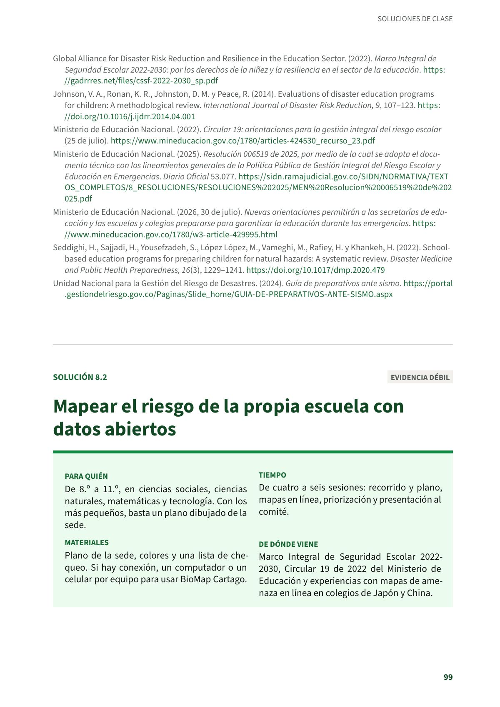
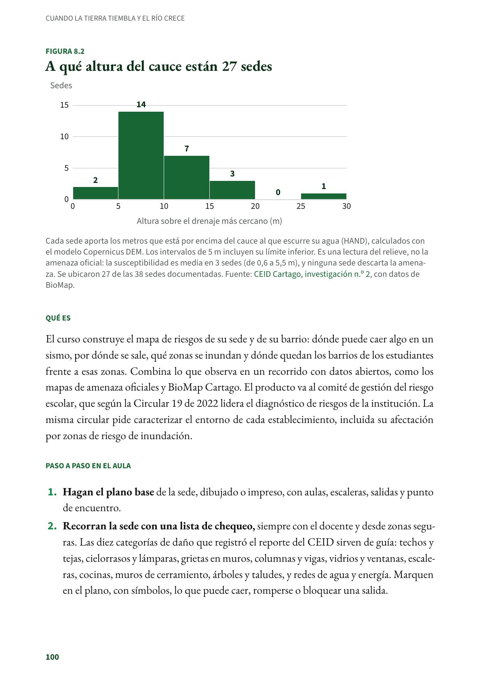
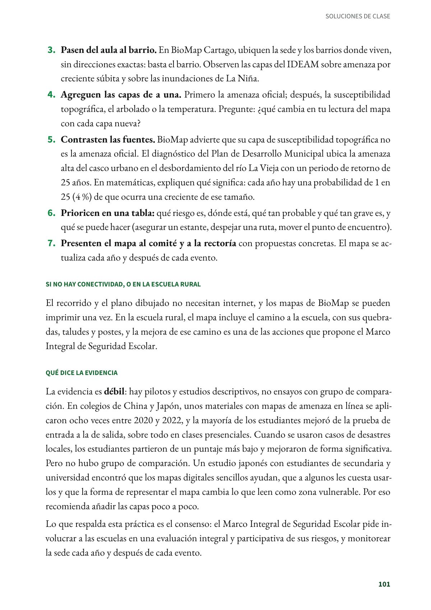
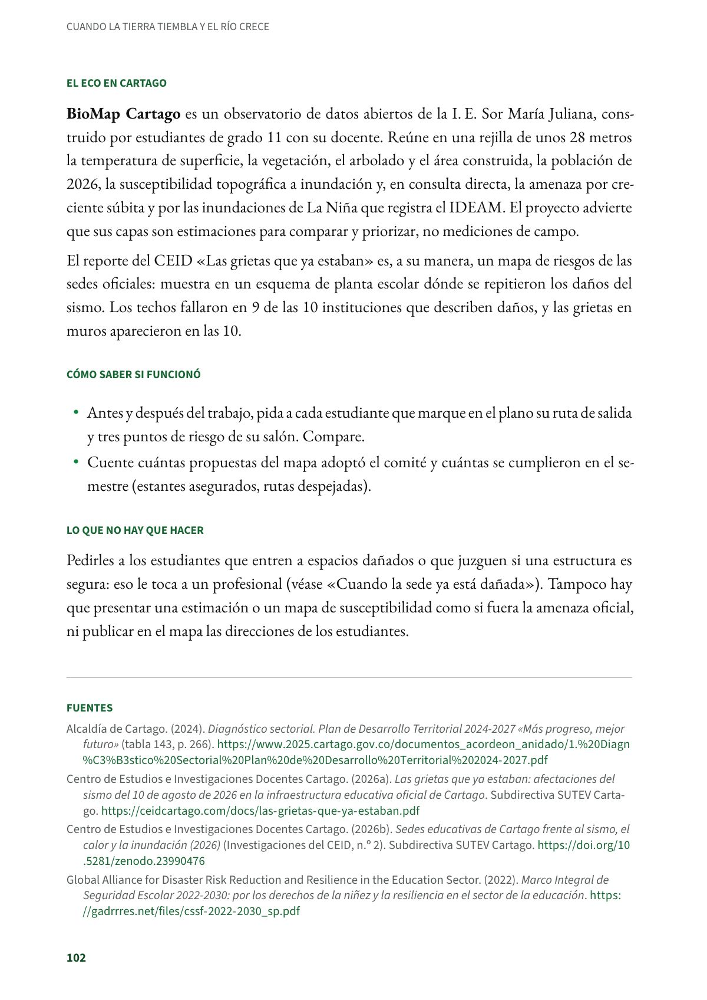
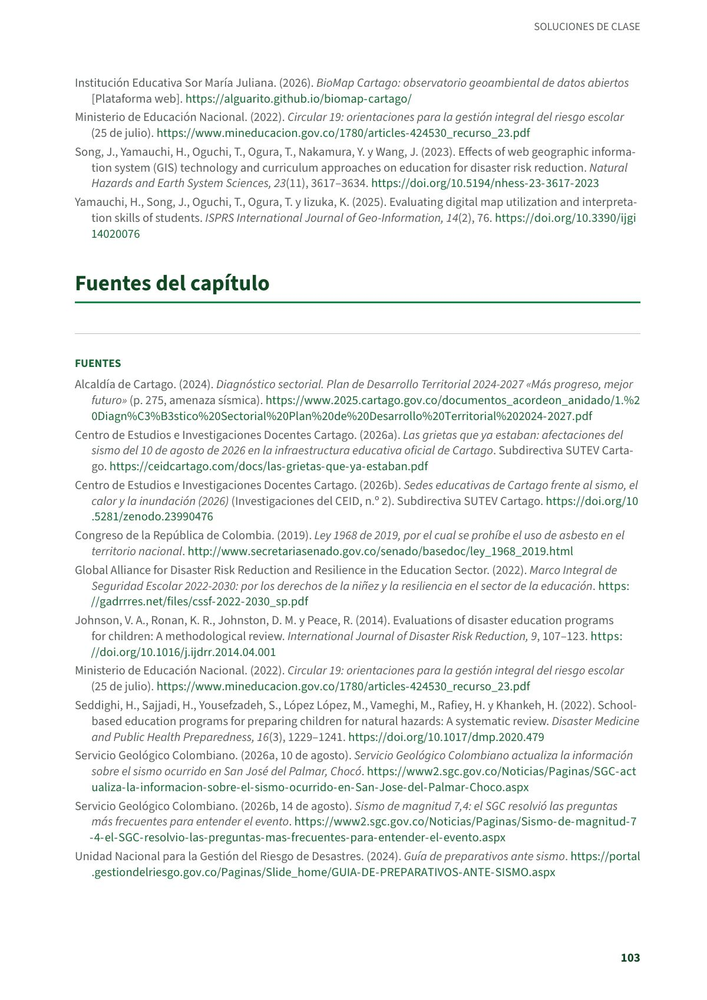

Mapear el riesgo de la propia escuela con datos abiertos
El curso construye el mapa de riesgos de su sede y de su barrio. De 8.º a 11.º, en ciencias sociales, ciencias naturales, matemáticas y tecnología. Evidencia débil.
PDF · 5 págs. · 111 KBEn resumen
- Evidencia: débil.
- Para quién: De 8.º a 11.º, en ciencias sociales, ciencias naturales, matemáticas y tecnología. Con los más pequeños, basta un plano dibujado de la sede.
- Tiempo: De cuatro a seis sesiones: recorrido y plano, mapas en línea, priorización y presentación al comité.
- Materiales: Plano de la sede, colores y una lista de chequeo. Si hay conexión, un computador o un celular por equipo para usar BioMap Cartago.
- De dónde viene: Marco Integral de Seguridad Escolar 2022-2030, Circular 19 de 2022 del Ministerio de Educación y experiencias con mapas de amenaza en línea en colegios de Japón y China.
Qué es
El curso construye el mapa de riesgos de su sede y de su barrio: dónde puede caer algo en un sismo, por dónde se sale, qué zonas se inundan y dónde quedan los barrios de los estudiantes frente a esas zonas. Combina lo que observa en un recorrido con datos abiertos, como los mapas de amenaza oficiales y BioMap Cartago. El producto va al comité de gestión del riesgo escolar, que según la Circular 19 de 2022 lidera el diagnóstico de riesgos de la institución. La misma circular pide caracterizar el entorno de cada establecimiento, incluida su afectación por zonas de riesgo de inundación.
Paso a paso en el aula
- Hagan el plano base de la sede, dibujado o impreso, con aulas, escaleras, salidas y punto de encuentro.
- Recorran la sede con una lista de chequeo, siempre con el docente y desde zonas seguras. Las diez categorías de daño que registró el reporte del CEID sirven de guía: techos y tejas, cielorrasos y lámparas, grietas en muros, columnas y vigas, vidrios y ventanas, escaleras, cocinas, muros de cerramiento, árboles y taludes, y redes de agua y energía. Marquen en el plano, con símbolos, lo que puede caer, romperse o bloquear una salida.
- Pasen del aula al barrio. En BioMap Cartago, ubiquen la sede y los barrios donde viven, sin direcciones exactas: basta el barrio. Observen las capas del IDEAM sobre amenaza por creciente súbita y sobre las inundaciones de La Niña.
- Agreguen las capas de a una. Primero la amenaza oficial; después, la susceptibilidad topográfica, el arbolado o la temperatura. Pregunte: ¿qué cambia en tu lectura del mapa con cada capa nueva?
- Contrasten las fuentes. BioMap advierte que su capa de susceptibilidad topográfica no es la amenaza oficial. El diagnóstico del Plan de Desarrollo Municipal ubica la amenaza alta del casco urbano en el desbordamiento del río La Vieja con un periodo de retorno de 25 años. En matemáticas, expliquen qué significa: cada año hay una probabilidad de 1 en 25 (4 %) de que ocurra una creciente de ese tamaño.
- Prioricen en una tabla: qué riesgo es, dónde está, qué tan probable y qué tan grave es, y qué se puede hacer (asegurar un estante, despejar una ruta, mover el punto de encuentro).
- Presenten el mapa al comité y a la rectoría con propuestas concretas. El mapa se actualiza cada año y después de cada evento.
Si no hay conectividad, o en la escuela rural
El recorrido y el plano dibujado no necesitan internet, y los mapas de BioMap se pueden imprimir una vez. En la escuela rural, el mapa incluye el camino a la escuela, con sus quebradas, taludes y postes, y la mejora de ese camino es una de las acciones que propone el Marco Integral de Seguridad Escolar.
Qué dice la evidencia
La evidencia es débil: hay pilotos y estudios descriptivos, no ensayos con grupo de comparación. En colegios de China y Japón, unos materiales con mapas de amenaza en línea se aplicaron ocho veces entre 2020 y 2022, y la mayoría de los estudiantes mejoró de la prueba de entrada a la de salida, sobre todo en clases presenciales. Cuando se usaron casos de desastres locales, los estudiantes partieron de un puntaje más bajo y mejoraron de forma significativa. Pero no hubo grupo de comparación. Un estudio japonés con estudiantes de secundaria y universidad encontró que los mapas digitales sencillos ayudan, que a algunos les cuesta usarlos y que la forma de representar el mapa cambia lo que leen como zona vulnerable. Por eso recomienda añadir las capas poco a poco.
Lo que respalda esta práctica es el consenso: el Marco Integral de Seguridad Escolar pide involucrar a las escuelas en una evaluación integral y participativa de sus riesgos, y monitorear la sede cada año y después de cada evento.
El eco en Cartago
BioMap Cartago es un observatorio de datos abiertos de la I. E. Sor María Juliana, construido por estudiantes de grado 11 con su docente. Reúne en una rejilla de unos 28 metros la temperatura de superficie, la vegetación, el arbolado y el área construida, la población de 2026, la susceptibilidad topográfica a inundación y, en consulta directa, la amenaza por creciente súbita y por las inundaciones de La Niña que registra el IDEAM. El proyecto advierte que sus capas son estimaciones para comparar y priorizar, no mediciones de campo.
El reporte del CEID «Las grietas que ya estaban» es, a su manera, un mapa de riesgos de las sedes oficiales: muestra en un esquema de planta escolar dónde se repitieron los daños del sismo. Los techos fallaron en 9 de las 10 instituciones que describen daños, y las grietas en muros aparecieron en las 10.
Cómo saber si funcionó
- Antes y después del trabajo, pida a cada estudiante que marque en el plano su ruta de salida y tres puntos de riesgo de su salón. Compare.
- Cuente cuántas propuestas del mapa adoptó el comité y cuántas se cumplieron en el semestre (estantes asegurados, rutas despejadas).
Lo que no hay que hacer
Pedirles a los estudiantes que entren a espacios dañados o que juzguen si una estructura es segura: eso le toca a un profesional (véase «Cuando la sede ya está dañada»). Tampoco hay que presentar una estimación o un mapa de susceptibilidad como si fuera la amenaza oficial, ni publicar en el mapa las direcciones de los estudiantes.
Fuentes
Alcaldía de Cartago. (2024). Diagnóstico sectorial. Plan de Desarrollo Territorial 2024-2027 «Más progreso, mejor futuro» (tabla 143, p. 266). 2025.cartago.gov.co
Centro de Estudios e Investigaciones Docentes Cartago. (2026a). Las grietas que ya estaban: afectaciones del sismo del 10 de agosto de 2026 en la infraestructura educativa oficial de Cartago. Subdirectiva SUTEV Cartago. ceidcartago.com
Centro de Estudios e Investigaciones Docentes Cartago. (2026b). Sedes educativas de Cartago frente al sismo, el calor y la inundación (2026) (Investigaciones del CEID, n.º 2). Subdirectiva SUTEV Cartago. doi.org
Global Alliance for Disaster Risk Reduction and Resilience in the Education Sector. (2022). Marco Integral de Seguridad Escolar 2022-2030: por los derechos de la niñez y la resiliencia en el sector de la educación. gadrrres.net
Institución Educativa Sor María Juliana. (2026). BioMap Cartago: observatorio geoambiental de datos abiertos [Plataforma web]. alguarito.github.io
Ministerio de Educación Nacional. (2022). Circular 19: orientaciones para la gestión integral del riesgo escolar (25 de julio). mineducacion.gov.co
Song, J., Yamauchi, H., Oguchi, T., Ogura, T., Nakamura, Y. y Wang, J. (2023). Effects of web geographic information system (GIS) technology and curriculum approaches on education for disaster risk reduction. Natural Hazards and Earth System Sciences, 23(11), 3617–3634. doi.org
Yamauchi, H., Song, J., Oguchi, T., Ogura, T. y Iizuka, K. (2025). Evaluating digital map utilization and interpretation skills of students. ISPRS International Journal of Geo-Information, 14(2), 76. doi.org
Así se ve en el libro
5 páginas



